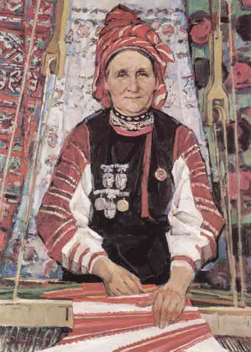

Изделия белорусских мастериц на территории Беларуси
Почему мы выбрали эту тему?
Мы решили сделать проект про женщин, так как этот год посвящён «Белорусской женщине», также мы взяли орнамент как главную тему.
Кратко о самом проекте
В самом проекте будут показаны орнаменты, будет рассказываться про создание орнаментов. Также будет про все приготовления к ткачеству.
Информация об источниках
Использовались ресурсы сети Интернет, визуальной базой работы стали авторские фотографии, сделанные в Филиале Ветковского музея старообрядчества и белорусских традиций им. Ф.Г. Шклярова.
Больше всего ткачество было развито в д. Неглюке Ветковской области.
Центр ручного ткачества: Неглюбка всемирно известна как уникальный и крупнейший центр традиционного белорусского ручного узорного ткачества, которое формировалось с XVIII века.
Анна Григорьевна Гринькова (г.р. 1923)
известнейший белорусский мастер художественного ткачества и народных ремесел.
Мария Павловна Ковтунова(г.р. 1915)
выдающаяся ткачиха, чьи работы выставлялись на международных выставках.
Ефросинья Суглоб (г.р. 1924)
одна из знаковых старейших мастериц, чьи рушники закупались ведущими музеями СССР.
Валентина Якутович
яркий мастер народных художественных ремесел Гусевицкого центра ткачества (Буда-Кошелевский район).

Портрет ткачихи из деревни Неглюбка (1975)Людмила Ковалева
современный мастер-методист Ветковского центра ткачества, которая активно воссоздает старинные полотна.
Евгений Зайцев
Народный художник БССР 1963
Член-корреспондент Академии художеств СССР